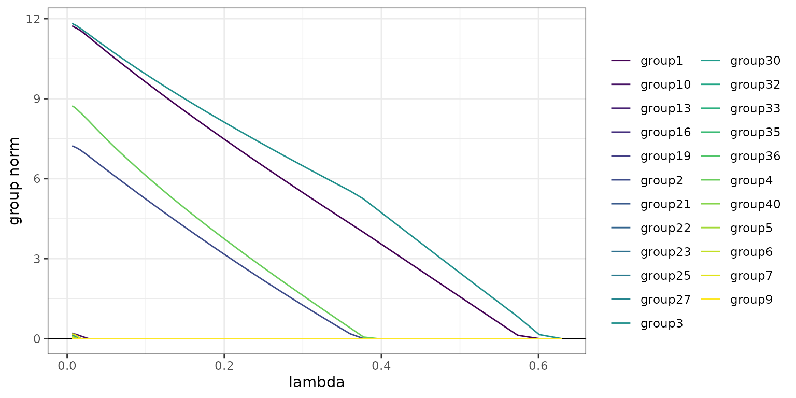
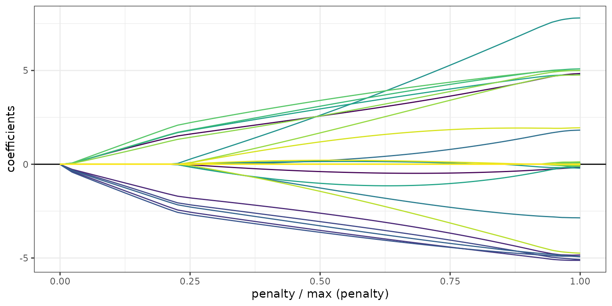

sparsegl
sparsegl.RmdThis package provides tools for fitting regularization paths for sparse group-lasso penalized learning problems. The model is fit for a sequence of the regularization parameter lambda.
The strengths and improvements that this package achieved compared to other sparse group-lasso packages are as follows:
Fortran significantly speeds up the sparse group-lasso model building process.
“Strong rule” is implemented during coordinate descent step, screening out zero-coefficient variables which might not be detected by some conservative criteria.
X can be a sparse input matrix passed as an argument in sparsegl(), and it does not have to be a regular matrix.
Plots are made with functions package ggplot2 instead of function plot from base, which provide better appearances and experience for visualization.
An extra function estimate_risk() evaluates the quality of fitted models in terms of different information criteria and provides a means for model selection. It is also an alternative for model selection if cross-validation is too costly.
This package is not on CRAN yet, so it can be installed using the [devtools] (https://cran.r-project.org/package=devtools) package:
devtools::install_github("dajmcdon/sparsegl", ref = "main")Building the vignettes, such as this getting started guide, takes a significant amount of time. They are not included in the package by default. If you want to include vignettes, then use this modified command:
devtools::install_github("dajmcdon/sparsegl", ref = "main",
build_vignettes = TRUE, dependencies = TRUE)For this getting-started vignette, firstly, we will randomly generate X, an input matrix of predictors of dimension n-obs by p-feature. To initiate y, a real-valued vector (make it a vector rather a matrix),
where the coefficient vector \(\beta^*\) is specified as below, and the white noise \(\epsilon\) following standard normal distribution serves as data variation. Then the sparse group-lasso problem is formulated as the sum of mean squared error ( linear regression) or logistic loss (logistic regression) and a convex combination of lasso penalty and group lasso penalty:
where
\(X^{(g)}\) is the submatrix of \(X\) with columns corresponding to the features in group \(g\).
\(\beta^{(g)}\) is the corresponding coefficients of the features in group \(g\).
bs is the length of \(\beta^{(g)}\).
\(\alpha\) adjusts the weight between lasso penalty and group-lasso penalty.
\(\lambda\) fine-tunes the size of penalty imposed on the model to control the number of nonzero coefficients of features, and furthermore, to avoid overfitting.
library(sparsegl)
set.seed(1010)
n <- 100
p <- 200
X <- matrix(data = rnorm(n*p, mean = 0, sd = 1), nrow = n, ncol = p)
beta_star <- c(rep(5, 5), c(5, -5, 2, 0, 0), rep(-5, 5), c(2, -3, 8, 0, 0), rep(0, (p - 20)))
groups <- rep(1:(p / 5), each = 5)
# Linear regression model
eps <- rnorm(n, mean = 0, sd = 1)
y <- X %*% beta_star + eps
# Logistic regression model
pr <- 1 / (1 + exp(-X %*% beta_star))
y_binary <- rbinom(n, 1, pr)sparsegl()
Given an input matrix X, and a response vector y (or a matrix with 1 column), a sparse group-lasso regularized linear model is fitted for a sequence of penalty parameter values in terms of penalized maximum likelihood. The penalty is composed of lasso penalty and group lasso penalty. The other main arguments the users might give are:
group: a vector with consecutive integers of length p indicating the grouping of the features. By default, each group only contains one feature if without initialization.
family: A character string specifying the likelihood to use, could be either linear regression “gaussian” or logistic regression loss “binomial”. Default is “gaussian”.
pf: a penalty vector of the length of the number of groups in total. Default value for each entry is the square-root of the corresponding size of each group, which is \(\sqrt{\text{bs}}\) in \((*)\) and \((**)\) above.
asparse: changes the weight of lasso penalty, referring to \(\alpha\) in \((*)\) and \((**)\) above: asparse = \(1\) gives the lasso penalty only. asparse = \(0\) gives the group lasso penalty only. The default value of asparse is \(0.05\).
lower_bnd: lower bound for coefficient values, a vector in length of 1 or the number of groups including non-positive numbers only. Default value for each entry is -\(\infty\).
upper_bnd: upper bound for coefficient values, a vector in length of 1 or the number of groups including non-negative numbers only. Default value for each entry is \(\infty\).
It returns a sparsegl object, and the main attribute of this object is:
df: the number of nonzero coefficients for each lambda value. This only represents an approximation to the exact degree-of-freedom. Detailed explanation can be checked under function estimate_risk() below.
fit1 <- sparsegl(X, y, group = groups)plot() for sparsegl objectThis function produces nonzero-only coefficient curves for each penalty parameter lambda values in the regularization path for a fitted sparsegl object. The arguments of this function are:
y_axis: can be set with either “coef” or “group”. Default is “coef”.
x_axis: can be set with either “lambda” or “penalty”. Default is “lambda”.
To elaborate on y_axis and x_axis:
The plot with y_axis = “group” is the group norms against the log-lambda or the scaled group norm vector. Each group norm is defined by: \[
\text{asparse}\times\rVert\beta^{(g)}\rVert_1 + (1 - \text{asparse})\times\sum_g\rVert\beta^{(g)}\rVert_2
\] Curves are plotted in the same color if the corresponding features are in the same group. Notice that the number of curves shown on the plots could be less than the actual number of groups since only the groups containing nonzero features at least at one lambda in the sequence lambda are included.
The plot with y_axis = “coef” is the coefficients of features against the log-lambda or the scaled group norm vector. Each curve with a distinct color represents a feature. Again, only the features having nonzero coefficients at least at one lambda value in the sequence lambda are considered.
The plot with x_axis = “lambda” indicates the x_axis presenting with log-lambda.
The plot with x_axis = “penalty” indicates the x_axis presenting with the scaled group norm vector. Each element in this vector is defined by: \[
\frac{\text{asparse}\times\rVert \beta\rVert_1 + (1-\text{asparse})\times\sum_g\rVert \beta^{(g)}\rVert_2}{\max_\beta\left(\text{asparse}\times\ \rVert \beta\rVert_1 + (1-\text{asparse})\times\sum_g\rVert \beta^{(g)}\rVert_2\right)}
\]
plot(fit1, y_axis = "group", x_axis = "lambda")
plot(fit1, y_axis = "coef", x_axis = "penalty", add_legend = FALSE)
coef(), predict() and print() sparsegl objectAll three functions consume a fitted sparsegl object as an arguments and
coef() and predict() return a matrix of coefficients and predictions \(\hat{y}\) given a matrix X at each lambda respectively, unless an optional argument s is assigned with a specified vector or numeric value from (but not necessarily) the original lambda sequence.
print() returns the number of nonzero features with nonzero coefficients at each lambda.
cv.sparsegl()
This function does a k-fold cross-validation (cv) on sparsegl. It takes the same arguments X, y, group, which are specified above, with additional argument pred.loss. It can be set with either “L2” or “L1” for linear regression model, “loss” or “misclass” for logistic regression model indicating the loss to use for cv error. This will return a cv.sparseg object.
fit_l1 <- cv.sparsegl(X, y, group = groups, pred.loss = "L1")plot(), coef() and predict() for cv.sparsegl objectplot(): produces cross-validation curve with upper and lower confidence bounds plots for each lambda in the regularization path for a fitted cv.sparsegl object. In the generated plot, the red points represent the cvm values at each lambda, and the attached gray vertical error bars indicate the uncertainty of cvm.
plot(fit_l1)estimate_risk()
This function returns the information criterion, which is the sum of the maximum log-likelihood and a penalty term determined by the chosen penalty type for a sparsegl model at each lambda. It provides a means for model selection by representing the trade-off between the goodness of fit of the model and the complexity of the model. It takes the same arguments X and y from the function sparsegl(). The additional arguments it needs are:
object: a fitted sparsegl object.
type: three types of penalty used for calculation:
AIC (Akaike information criterion): 2 * df / n
BIC (Bayesian information criterion): log(n) * df / n
GCV (Generalized cross validation): -2 * log(1 - df / n)
where df is the degree-of-freedom, and n is the sample size.
approx_df: indicate if a vector of the approximation to the degree-of-freedom at each penalty parameter lambda is used. Default is FALSE and the program will compute the unbiased estimate of the exact degree-of-freedom.FYI: Degree-of-freedom is a tool to assess the complexity of a statistical modeling procedure. object$df, the approximation to the degree-of-freedom is the number of nonzero coefficients of the model. Notice that it would take some time to calculate the unbiased estimate of the exact degreeo-of-freedom if X is complicated. For more details about how to realize this calculation, our method is implemented based on the paper https://arxiv.org/pdf/1212.6478.pdf.
risk <- estimate_risk(fit1, X, y, type = "AIC", approx_df = FALSE)